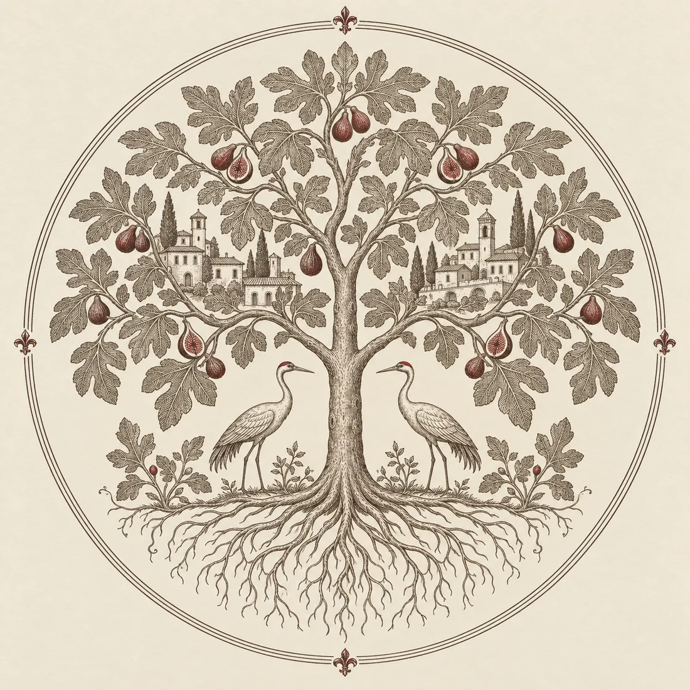
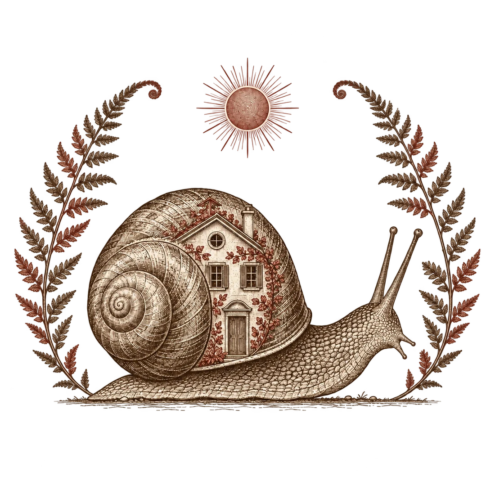
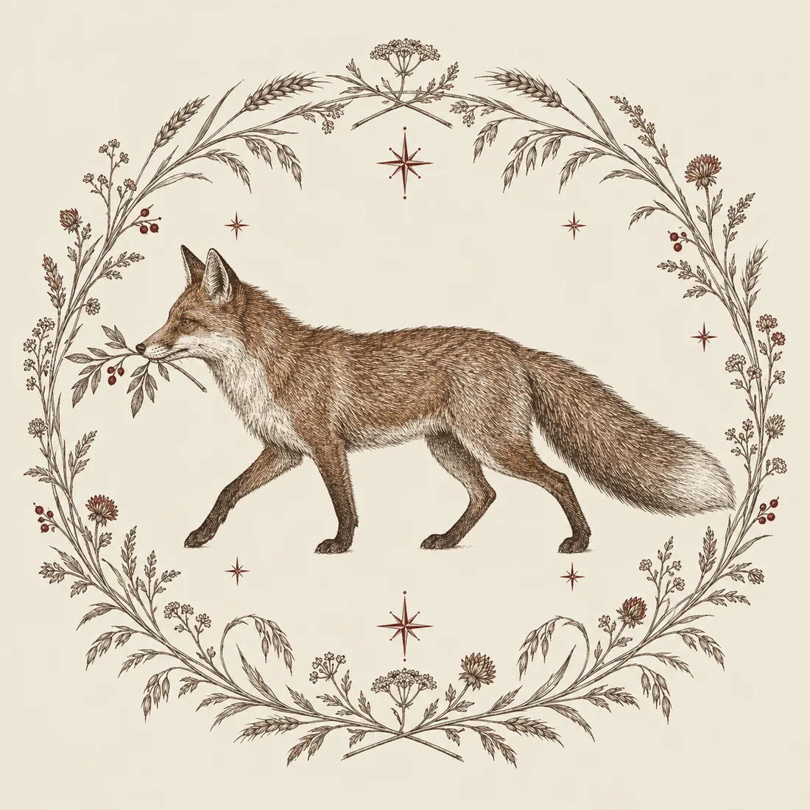
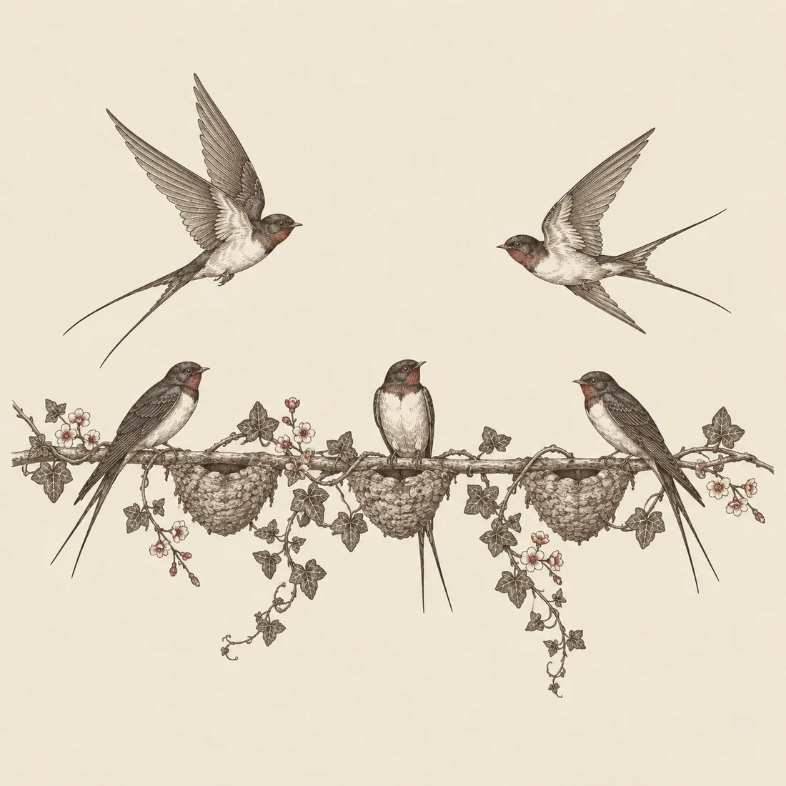
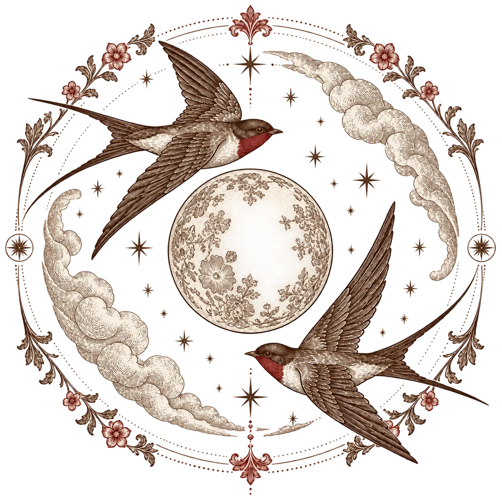
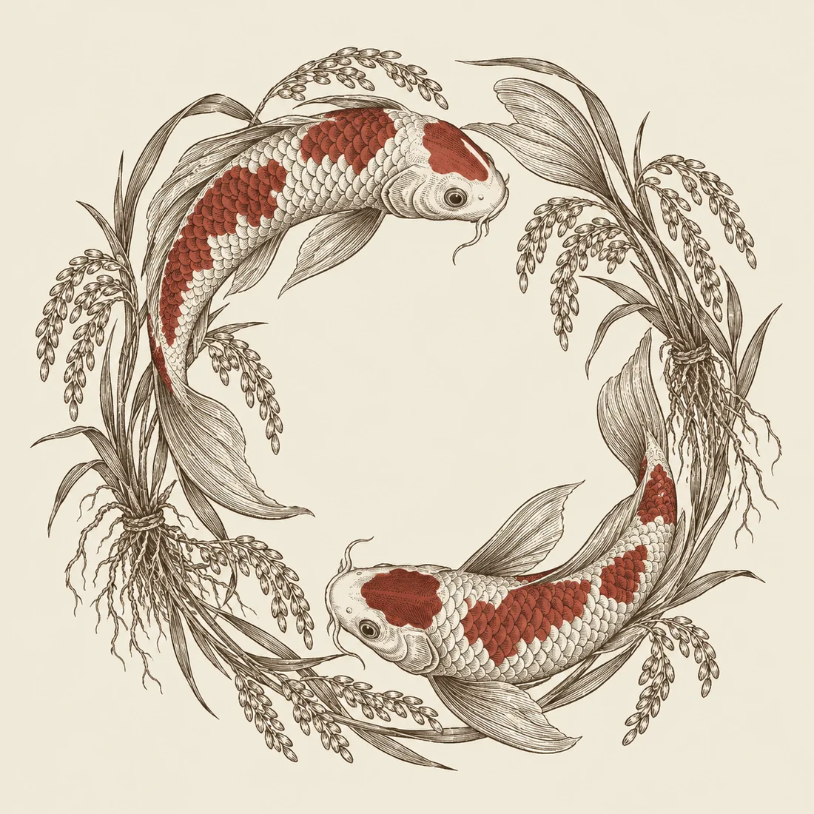
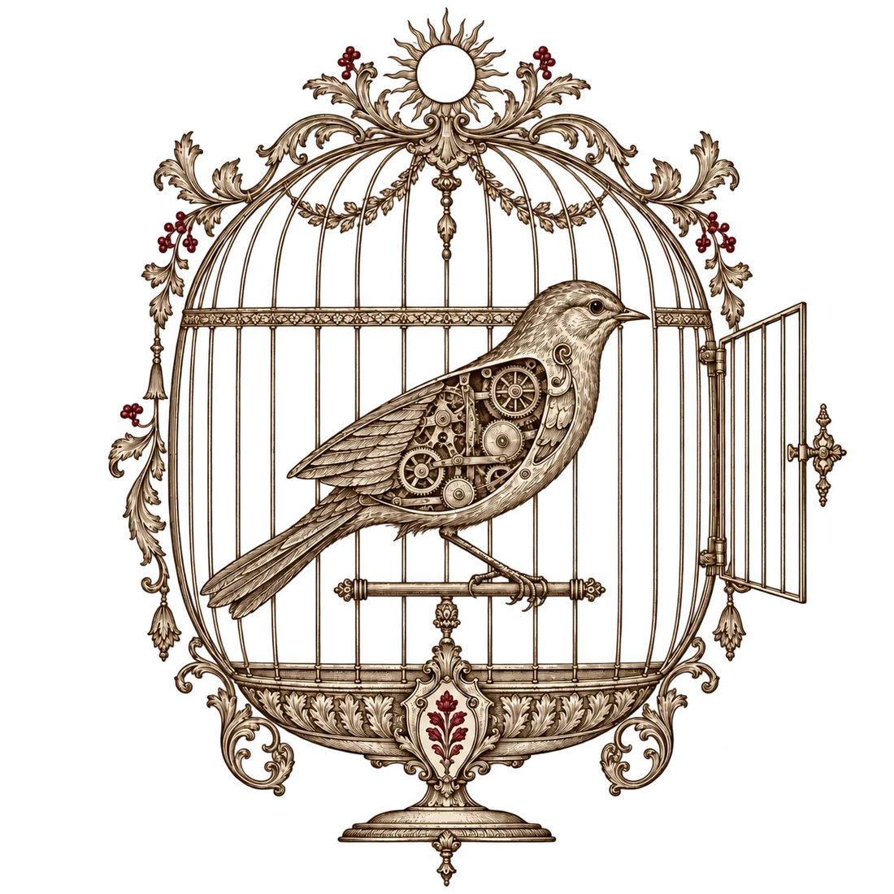

飛地・台灣季 ｜ 在世界之間
無國界的遊牧
那些數位流動者的落地生根實驗
人・勞動・社群・空間・世界
黃豆泥 Yen-Lin (mashbean) Huang
London · 20 September 2026
人、勞動、社群、空間、世界

一份還在寫的田野筆記
兩種在清邁遊牧的人

I · 暫時離開
躺平主義的遊牧
換個地方喘口氣，過一陣子再說。

II · 動手重做
身體力行的遊牧
帶著一群人，試著把想要的生活做出來。
這裡講的，是我在清邁遇見的兩種人。
躺一躺，然後呢？
-
01
高壓日常
工作、房價、內卷
-
02
清邁躺一躺
換一種生活節奏
-
03
積蓄見底
生活還是要花錢
-
04
回去當牛馬
存到錢，下次再來
從大理，流動到清邁
-
01
2022・大理的活動被清場
-
02
沒有大台，也繼續辦
聚會改用去中心的方式進行
-
03
一部分人來到清邁
有人就這樣定居下來
-
04
多中心的群落
有衝突，也長出了產業鏈
彼此也不見得熟；有些人反而更常與各自的西方社群往來。
人留下來，事情就多了
清邁的遊牧觀察
「甚至還建造了多中心的群落，有了點衝突，也有相應的產業鏈出現。」黃豆泥
我反而覺得這一群更有意思。
有了衝突，才知道大家究竟想怎麼一起生活。

共居・聚會・合作・分歧
故鄉可能是排他的
也可能是排擠的
第二章 / HOME & ELSEWHERE

千里共嬋娟
不同地方，共享同一個空間
神遊於物外
同樣空間，尋找逃離的地方
千里共嬋娟
遠方之一
人在海外
還是使用微信
語言・熟人
資訊・共同時間
遠方之二
波士頓
罵罵咧咧的司機
移居・日常
故鄉・情緒
在不同的地方，共享同一個空間。
神遊於物外
另一種遠方
穆斯林的信仰
在同樣的空間，
尋找逃離的地方。
地方・家庭・信仰・歸屬
次文化的遠方
德意志博物館・火腿族志工爺爺
一起把不存在的世界寫出來。
在閱讀與創作裡找到同類。
訊號先抵達，人未必要見面。
數位避秦
第三章 / EXODUS
故鄉、邊境、戶口的誕生
制度如何看見人
進了名冊，
也就進了治理的範圍。
：想像名冊之外的生活。
-
01
編入名冊
把人辨認出來
-
02
連到土地
人屬於哪個地方
-
03
分配義務
賦稅、徭役與管理
-
04
劃定邊界
限制進入與離開
我們都有兩套戶籍
國家
戶籍・證件
公共服務
證明你的身分，
也決定你能使用哪些服務。
平台
帳號・登入
社交與支付
朋友、作品與交易都在裡面。
帳號一停，入口就關了。
國籍與帳號的法律地位不同；但生活被擋在門外的感覺，未必那麼遙遠。
把身分的三件事拆開
-
01
識別
核發者確認身分
-
02
憑證
把證明交給個人保管
-
03
驗證與授權
需要時，由個人出示
個資權力：核發與撤銷
儲存位置：裝置與機構
使用足跡：紀錄對誰可見
把程式印成一本書
PGP · 1995 · MIT PRESS
原始碼出版計畫
-
01
加密程式
讓私人通訊保持私密
-
02
出口管制
程式跨境受到限制
-
03
印成紙本
C 原始碼成了出版物
-
04
讀回程式
文字又能變成工具
把主張寫成程式，也把程式印上了紙。
1996：網路獨立宣言
A DECLARATION OF THE INDEPENDENCE OF CYBERSPACE
“We are creating a world that all may enter without privilege”John Perry Barlow・1996
三十年後，
進入這個世界仍需要誰的許可？
伺服器、平台條款、網路封鎖。
還有，沒辦法搬進網路的肉身。
網路也會失憶
2000–2010 年代・逃離數位壟斷
無名小站下線，
早期網頁一個個失連。
伺服器要錢，網域要續，格式會過時。
「還在網路上」這件事，一直都需要有人照顧。
連談論網路崩塌的文章，也可能消失。
藝立協：誕生自網絡的部落美學
2001・派樂西王國
IRC、部落格、紫藤廬。
網友也會在茶館見面。
/ PiraGene
身分、版權、交互信任，
都可以拿來當創作材料。
逃離社群平台
-
01
協議
讓資料可以搬遷
-
02
結社
成員、承諾與分工
-
03
治理
申訴、決策與交接
-
04
金流
維護成本有人支付
-
05
抗審查
受壓時仍能連結
提供一條路。搬家之後，總還得有人付房租、整理公共空間。
三種落地實驗
快閃城市：網友見面搞事
ZuzaluEdge CityMuFrontier Tower
-
01
找到空間
短期共居與活動
-
02
網友見面
讀書、工作、交換想法
-
03
一起搞事
試試新的合作
-
04
再次離散
把關係帶往下一站
散場之後，地方留下了什麼？
「介於共同工作空間、招商大會、青年旅館與讀書會的複合體。」黃豆泥・加密社群田野文章
對參與者
朋友、工作機會
下一站的邀請
對在地居民
哪些關係與資源
能待得久一點？
我問 Vitalik，Zuzalu 後來怎麼了。他說：去中心了，各地都有人繼續。
游擊的人：Amir Taaki
自治社區、通訊、加密貨幣、經濟重建。
把手上的工具帶到真實的衝突現場。
「我著實好奇他在羅賈瓦留下的應用，至今究竟有沒有持續被使用。」黃豆泥
去過，和有人接著用，是兩件事。
加泰隆尼亞／RARIMO 投票實驗
證明我有資格，
不交出我的選擇。
護照・匿名・公民資格・政治承認
-
01
已有的證件
確認參與資格
-
02
只證明所需條件
-
03
數位投票
檢查程序與結果
：加泰隆尼亞的 Vocdoni 與 Rarimo 是不同專案；此圖說明 Rarimo 的一般架構。
把理念蓋成一個地方
BALAJI SRINIVASAN
-
01
網路社群
先有共同認同
-
02
集結資源
資金、技能、支持者
-
03
實體聚居
Network School
-
04
生活規則
在同一棟樓裡實踐
網路國家的主權願景，還不是已經發生的事。
自由意志主義者，也要做早操？
NETWORK SCHOOL・朋友轉述
「我還真沒辦法想像一群『自由意志主義者』會一起集體做早操。」黃豆泥
一起生活
早操、居住問題，
還有公開表達的不滿。
「百花齊放」
朋友用這四個字，形容
徵求意見後有人被逐出的經驗。
誰能留下？
空間握在主理人手上時，
異議者有什麼選擇？
以上為講者友人的轉述，尚未經獨立查證。
何處是故鄉
第四章 / PUTTING DOWN ROOTS
地方創生
山古志村
關係人口

山古志村雪景・攝影／張寶成
遠方的人，也能成為村民嗎？
不只來玩一次，
也不必立刻搬來住。
從一件作品、一個群組，
開始與山古志有來往。
網路與村落之間，要有人來回跑
-
01
關注與加入
第一次看見山古志
-
02
共同參與
討論、提案與資源
-
03
地方執行
熟悉村落的人接手
-
04
持續回應
再把日常需求帶回來
海外者的數位結社？
資金
共同支持什麼？
長期成本怎麼付？
人才
把專長接起來。
也把工作分下去。
資訊
經驗不要只留在
滑過就找不到的聊天室。
制度
有人決策、有人接手，
新人也進得來。
何處是故鄉，還在田野裡找
被機器奴役的未來
兩種未來觀 I・1995・§173
“At that stage the machines will be in effective control.”Ted Kaczynski
「到了那個階段，
機器將實際掌握控制權。」
本簡報譯文
作為批判閱讀材料；不認同作者的暴力行動。

機器工作，人類稀疏
兩種未來觀 II・1957
艾希莫夫《裸陽》
工作交給機器人
人類分散住在各自的領地。
見面變成難事
遠距交往很熟悉，肉身相見卻令人不安。
不必再為工作聚集之後，
還有什麼讓人願意靠近彼此？
01｜還有多少「足夠的工作」？
原簡報 P.15–18、20
DANIEL SUSSKIND
薪水呢？
Susskind 看的是任務如何被逐步接手。
職缺沒有歸零，仍可能發生薪資下降、
工時不穩；收入、地位與意義，也跟著鬆動。
過去：新任務曾抵銷替代。
往後：新任務也可能交給機器。
02｜一份工作，是一束任務
原簡報 P.19、21–23
示意任務，非特定職業清單
機器接手其中一部分，
對人的需求可能減少。
互補力量
生產力提高、需求擴大，
也可能長出新的部門與任務。
不用先做出通用人工智慧，也能一步一步改變一份工作。
03｜有工作搆不到，還是工作不夠？
原簡報 P.24–25
摩擦與錯配
機會在另一邊
- 技能能力與職缺對不上
- 認同不願或不敢換一種身分
- 地點機會集中，搬遷有成本
結構性需求不足
過了橋，也沒有職缺
即使再訓練完成，市場仍可能
不需要那麼多人類勞動。
商品與服務變多，
人的工作機會未必跟著增加。
遠距與遊牧鬆動了地點限制。技能、照護、收入分配，還在原地等著。
04｜機器創造的繁榮，分到誰手上？
原簡報 P.26–28、57
人力資本
技能・經驗・知識
靠工資分享收益。
需求與薪資卻可能往下走。
其他資本
機器・土地・股權・資料
持有資產的人，
可能拿走更多新增收益。
Susskind 的回應
收入分享、資本分享、勞動保障；也要處理大型科技權力與休閒的公共安排。
：照護與社群貢獻，要不要換成收入？由誰認定？
05｜少一點上班，空出來做什麼？
原簡報 P.29–32、36
SRNICEK & WILLIAMS
學習、創作、照護、
政治參與、社交、遊戲。
後工作主張讓人有能力拒絕惡劣的工作。
少賣一點時間，不代表人的活動也少了。
需要收入、時間、公共服務。
不能只叫大家勇敢做自己。
06｜一次活動，怎麼變成長期的力量？
原簡報 P.33–35、37、39、58
SRNICEK & WILLIAMS
他們批評：短期、地方、直接行動可以聚人；若始終停在這裡，就很難改變更大的制度。
-
01
共同想像
提出值得爭取的未來
-
02
組織累積
社群、媒體與工會
-
03
擴大聯盟
連結政治組織與公共討論
-
04
持續施力
政策、投資、公共制度
這也是快閃城市會遇到的問題：人散了，事情還做得下去嗎？
07｜後工作的要求，與它的岔路
原簡報 P.38、40、58
四項要求，一起推
走下去，也可能走歪
富國享受紅利，窮國繼續低薪勞動。
機器多了，能源與生態負擔也多了。
男性少上班，女性繼續無薪照護。
作者要求的解放，同時包含全球、性別與生態正義。
08｜什麼才算親勞工 AI？
原簡報 P.41–46
關心的是：專業價值、報酬與自主，有沒有一起增加？
增強勞動／資本
效率提高。
收益分配仍未定。
自動化
機器接手任務。
對人的需求可能下降。
專業平準化
新手更容易上手。
原有專業也可能貶值。
創造新任務
出現新的工作，
需要人的判斷與專業。
產出增加了、按鈕變少了，還不足以回答這個問題。
09｜同一項技術，可以分成三條路
原簡報 P.47–51
-
01
自動化器
技師成為指令的眼睛與雙手
-
02
技師助手
協助診斷、判斷與複雜修復
-
03
轉軌助手
支持學習新領域與新任務
改變誘因的工具
採購・補助・稅制・競爭政策・勞工發言權
電工、教師、專利審查與無障礙工作已有輔助案例；部署也可能走向中央監控。
10｜帶著這些分歧，繼續討論
原簡報 P.52–60
用了工具，我還留下哪些能力？
新任務、收入與收益，分給了誰？
誰有力量改規則？誰被排除？
誰設計、採購、管理，又向誰負責？
這幾位作者對市場、行動者，
甚至工作本身的未來，都不完全同意。
人・勞動・社群・空間・世界